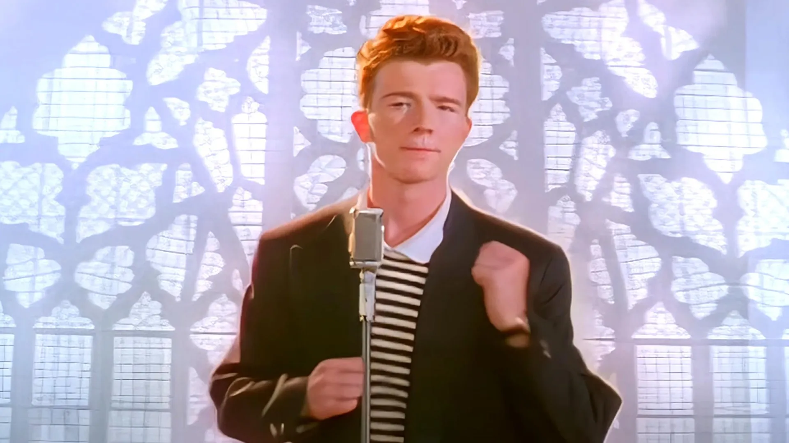

Homepage
Facts
Analysis
Meme
Timeline
Behind the man
Video
Never Gonna Give You Up
Never Gonna Give you up sparked the phenomenon, we know today as Rick Rolling. As of 2022 Never gonna give you up reached 1 BILLION! views on youtube

Fact of the day:
Rick Astleys albums:
Whenever you need somebody
Hold Me in Your Arms
Free
Body and Soul
Portrait